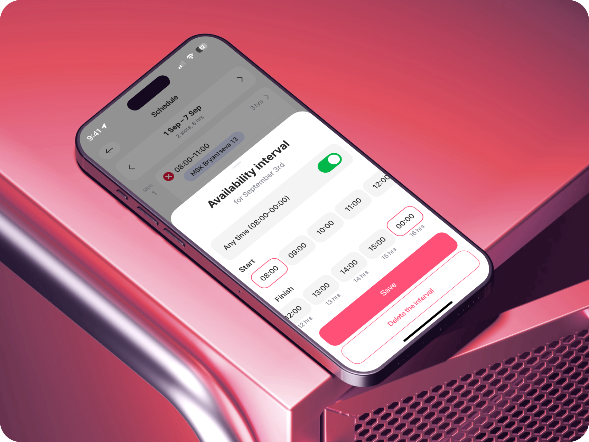
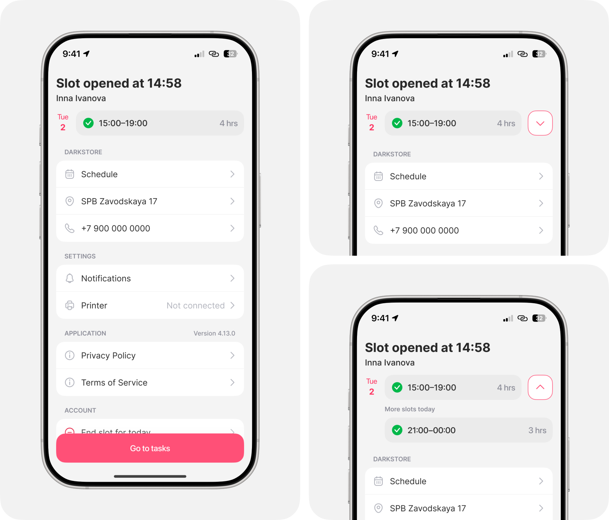
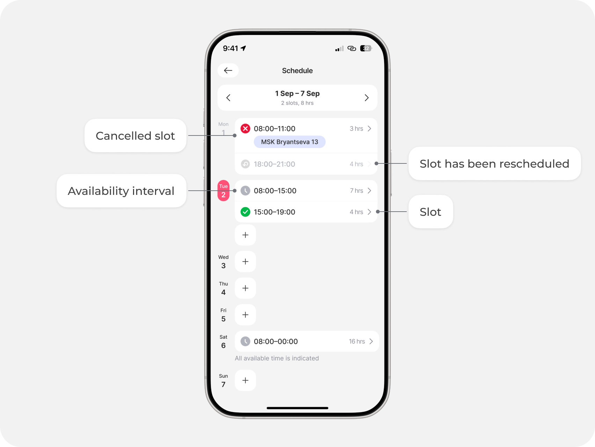
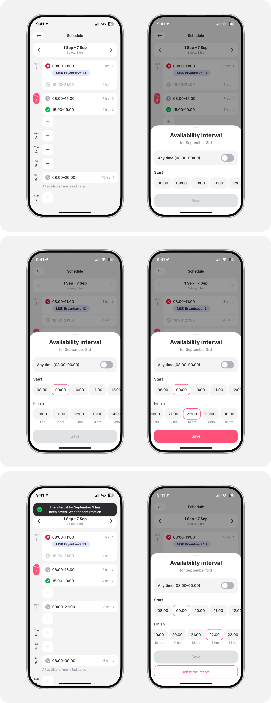
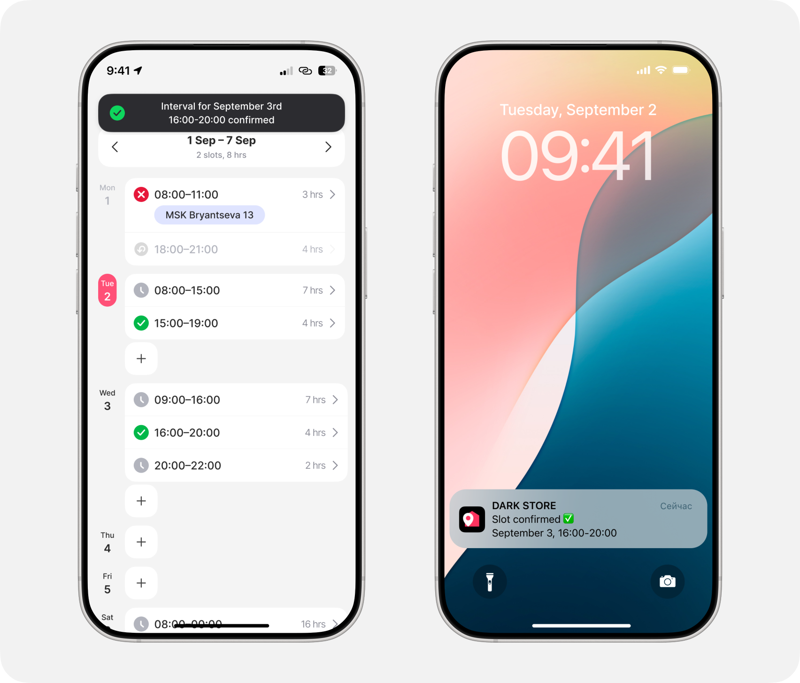

Picker schedule

Pickers arrive at the dark store at the time approved by the administrator and coordination team. It is important for the business to have enough pickers in dark stores during peak order hours.
Metrics
• Time to Task
• Speed of taking a task into work
• Product quality
• Speed of taking a task into work
• Product quality
DAU
7K+
Dark Stores
2 400
My role
Worked end-to-end on the project: from discovery and problem definition through design to final release
• Conducted interviews with the business to identify key issues
• Together with a researcher, interviewed pickers and administrators to document the AS IS process
• Created CJM and Blue Print
• Conducted 8 UX tests
• Rollout to 2 400 dark stores
Business problem
Administrators scheduled staff without accounting for peak loads, leading to a shortage of pickers during evening hours and causing delays
Too many people are responsible for pickers’ dark store shifts — administrators and coordination staff alike
The main insight
Research revealed that the method of scheduling pickers’ shifts differs from dark store to dark store
Pickers indicate their availability through a courier app, causing errors when a staff member is still working as a courier
Pickers write in chats and the admin personally contacts coordination staff when a picker needs to be brought in
Task
Based on the research results presented to the business, a decision was made to create a scheduling section for pickers.
A section needs to be created where pickers can specify their available shift time. Coordination staff will be responsible for confirming the shift at the dark store.
Hypotheses
A dedicated section in the picker app will prevent errors caused by multi-role assignments
Time to Task
Removing the administrator from the process will reduce fraud
Fraud
A section where pickers can see their slots will make the process transparent
CSAT
Coordination staff will ensure the right number of employees are present during peak hours
Time to Task
Main

Section
Availability interval is the time indicated by the picker.
A slot is the time confirmed by a coordination employee when the picker arrives.

Adding a slot
Pickers indicate the time at which they are ready to come to the dark store

Slot confirmation
Coordination staff confirm the time when the picker must arrive

Result
-4%
Time from order creation to
delivery handoff
-6%
Time from order creation to picking
start
+2%
Share of orders picked during peak
hours
Released
2 400 dark stores
The key result was the presence of a sufficient number of employees in dark stores during peak hours